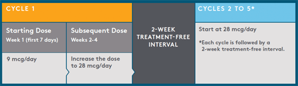

  <!-- Fragment 04 -->
<tr>
    <td>
        <table width="550" align="center" border="0" cellpadding="0" cellspacing="0" style="font-family: Arial, HelveticaNeue, Helvetica, sans-serif; background: #efefef;border-collapse:collapse;">
        <tr>
            <td width="500" style="padding:25px;color: #005678;font-size: 18px">
                <strong style="font-size: 26px;color:#faa21b;margin-bottom:0px;margin-top:25px">
                    Dose and administration
                </strong>
                <br><br>
                    BLINCYTO<sup>&reg;</sup> is administered as a continuous intravenous infusion delivered at a constant flow rate using an infusion pump that is programmable, lockable, non-elastomeric, and has an alarm. A single cycle of treatment with BLINCYTO<sup>&reg;</sup> consists of 4 weeks of continuous intravenous infusion followed by a 2-week treatment-free interval.
                <br><br>
                    Patients may receive 2 cycles of induction treatment followed by 3 additional cycles of BLINCYTO<sup>&reg;</sup> consolidation treatment.
                <br><br>
                    <strong>Dosage for patients at least 45 kg (99 lbs) in weight</strong>
                <p style="text-align: center">
                    
                </p>
                <br>
                    Hospitalization is recommended at a minimum for the first 9 days of the first cycle and the first 2 days of the second cycle. For all subsequent cycle starts and reinitiation (eg, if treatment is interrupted for 4 or more hours), supervision by a healthcare professional or hospitalization is recommended.
                <br><br>
                    <strong>Premedication</strong><br />
                    Premedicate with dexamethasone 20 mg intravenously 1 hour prior to the first dose of BLINCYTO<sup>&reg;</sup> of each cycle, prior to a step dose (such as cycle 1 day 8), or when restarting an infusion after an interruption of 4 or more hours. Do not flush the BLINCYTO<sup>&reg;</sup> infusion line, especially when changing infusion bags. Flushing when changing bags or at completion of infusion can result in excess dosage and complications thereof. Preparation and administration errors resulting in overdose have occurred.
            </td>
        </tr>
 <tr>
                                             <td style="text-align: center;background:#efefef;padding: 30px auto; color:#fff;font-weight: bold;font-size: 22px;padding-top:15px;padding-bottom:30px">
                                                 <table  cellspacing="0" cellpadding="0" bgcolor="#efefef" align="center" style="margin:10px auto 0;border-collapse:collapse" >
                        
                        <tr><td align="center" style="font-family: arial; padding:15px 20px;padding-bottom:15px;background: #faa21b"> <a href="#" target="_blank" style="font-size:22px;color:#ffffff;text-decoration:none;vertical-align:middle;"><strong>Download Full Pharmacy Brochure &gt;</strong></a></td></tr>
                    </table>
                        </td>
                                             </tr>
        </table>
    </td>
        </tr>